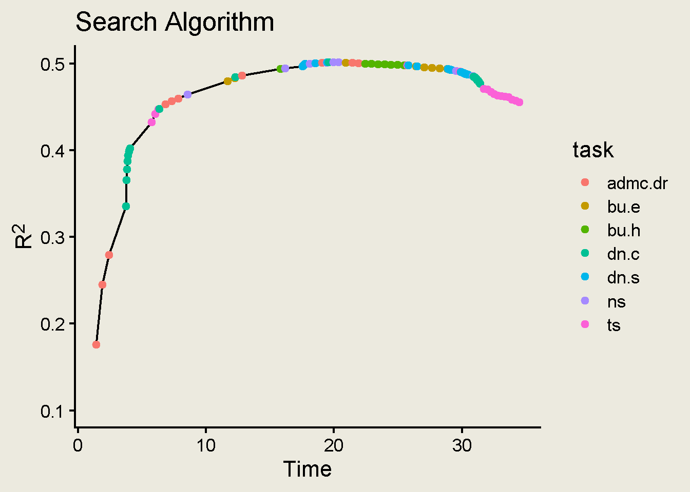

Code
library(tidyverse)
library(gt)Jessica Helmer
July 10, 2026
Identifying talented forecasters is crucial for ensuring decision-makers across levels and domains have access to informative forecasts about future events. Previous forecaster talent-spotting took months, typically collecting data on forecasters’ accuracy throughout long forecasting tournaments including IARPA’s Aggregative Contingent Estimation tournament.
The development of the recent Forecasting Proficiency Test (FPT) moved the goalpost in forecaster skill measurement, creating a 60-minute test that can capture over 70% of the variation in forecaster accuracy. However, while certainly an improvement on the previous effort it took to measure people’s forecasting ability, 60-minutes still remains a long time that may prevent otherwise interested parties from using the FPT, so, in this work, we aim to create a shorter, roughly 15-minute version of the FPT that decreases the time burden on examinees with minimal loss to measurement efficacy.
The FPT is made up of a combination of forecasting items and cognitive tasks. Forecasting items were included because accuracy on previous forecasting items was the most predictive measure of forecasting ability compared to all other included measures. However, a test exclusively made up of forecasting items would not provide information on a forecaster’s accuracy on those items until those items resolved, which is often weeks or months in the future. Therefore, the FPT also included cognitive measures that showed to be associated with forecasting ability. Some of the cognitive tasks included had already been shown to be associated with forecasting ability, and some had not been examined in conjuction with a forecasting context before.
To develop the FPT, seven weeks of data was collected from over 1,000 participants on both a set of forecasts elicited on forecasting items across domains and on a large battery of cognitive tasks. To select cognitive tasks to include in the final FPT versions, sum scores were calculated for each participant on each task, and then associations between cognitive task scores and forecasting ability were examined. Multiple hour-long final FPT versions were created with different ratios of forecasting items to cognitive measures (balancing the better predictive ability of the forecasting items with the immediate scoreability of the cognitive measures), and the cognitive measures for each version were selected by identifying the set of cognitive tasks with the greatest associations with forecasting ability that still fit into the allotted expected testing time for cognitive tasks for that FPT version.
The cognitive tasks included in the all-cognitive-task version of the 60-minute FPT accounted for 54% of the variance in forecaster-level accuracy.
Overall, we currently only focus on the cognitive tasks that in the original FPT paper that showed strong enough associations with forecasting ability to warrent being included FPT version with the most cognitive tasks.
Denominator Neglect was overall the strongest performing task in the FPT. It is a binary choice task between lotteries of two ratios of gold and silver coins, with the goal of maximizing the chance of picking a gold coin. This task was intended to target the denominator neglect bias, the idea that people will discount the numerator size of a ratio when the denominator size was large. Each choice had one lottery with a small denominator (10 coins) and one lottery with a large denominator (400 coins).
The task had multiple conditions within it. The first was whether the choice was in harmony with the denominator neglect bias (i.e., the larger-denominator ratio was also the larger lottery and therefore the correct choice) or in conflict with the denominator neglect bias (i.e., the larger-denominator ratio was in fact the smaller lottery). The task also varied in its presentation of the ratios: in the Separate version, the lotteries were shown in either text form (e.g., 3 gold coins out of 10) or in visual form (an array of three gold coins out of 10 gold coins). In a given choice pair, either lottery could be shown in either text or visual, such that some choices had one lottery text and one lottery visual, some had both text, and some had both visual. In the Combined version, all lotteries were presented in both text and array form.
The lotteries also varied in the proportion of gold coins in the small-denominator lottery (1, 2, or 3 gold coins of 10) and in the offset between the proportion of gold coins in the small-denominator lottery and the proportion of gold coins in the large-denominator lottery. This offset ranged from 1% to 8% in increments of 1% where in conflict trials, the large lottery proportion was \[ \text{large denominator lottery prop} = \text{small lottery denominator prop} - \text{offset} \] and in harmony trials, the large lottery proportion was \[ \text{large denominator lottery prop} = \text{small lottery denominator prop} + \text{offset} \]. This setup meant that the large lottery proportion could be as large as 38% gold coins in harmony trials and as small as 2% gold coins in conflict trials.
Describe
Hard, Easy versions
Describe noise x n_datapoints x direction x function
Describe
Describe
We did not include the Coherence Forecasting Scale (CFS) in this attempt to shorten the FPT. The CFS has multiple testlets with grouped scores, and we did not attempt to examine item-level scores from this measure.
We did not include Matrix Reasoning in this attempt to shorten the FPT. The items were grouped into lists, with most lists having different items from all other lists but some lists having 1–2 items cross between lists. Participants each only saw one list. Because of this complexity and the lack of shared items among participants, we did not attempt to examine item-level scores from this measure.
Using all items from Denominator Neglect: Separate, Denominator Neglect: Combined, Bayesian Update: Easy, Bayesian Update: Hard, Time Series, Adult Decision Making Competency: Decision Rules, and Number Series yielded 99 candidate items to be included in the shorter FPT test.
Because the selection of tasks for the original FPT was done by examining task sum scores’ association with forecasting ability, variation of the informativeness of individual items within tasks towards forecasting ability remains unexplored. By identifying if some items within tasks are more informative than others, we may be able to reduce the amount of items administered to an examinee while still maintaining good predictive ability of forecasting ability.
One interesting difference between this project and most psychometric work is that in most psychometric work, items are administered in a test aimed to capture some latent construct. Here, the cognitive tasks administered are not even necessarily intending to directly measure forecasting ability; they were developed themselves to measure a different cognitive construct and just happen to be related to forecasting ability. So, our primary interest is not in the cognitive tasks’ ability to measure their intended cognitive construct themselves, but instead in the items’ that (1) have strong ability to capture their intended construct and (2) are capturing a construct that itself has a strong relationship with forecasting ability.
In this work, we already have a measure of our intended construct (forecasting ability), and we want to identify items within tasks that have strong associations with that measured construct. What common models like the 2PL here offer is the information about the items measuring the latent construct, but not (directly) the construct’s association with forecasting ability.
Another challenge here is that many of the cognitive measures have different outcome scales. For example, some follow a binary correct-incorrect pattern (e.g., Denominator Neglect, Decision Rules), while others are scored as a continuous distance from the correct response (e.g., Bayesian Update, Time Series).
Overall, our goal for this project is to create a shorter version of the FPT, ideally able to be administered in about 15 minutes, that can still provide a high level of information about forecaster skill. To do this, we will create three versions of this shorter test through different methods and compare each of the 15-minute tests’ relationships with forecasting skill to each other as well as to the original 60-minute version of the FPT.
We used three different methods to identify candidate tests for these new FPT versions. Our overall strategy was to use each method to achieve some ranking of all potential items in terms of their usefulness in predicting forecasting ability. Then, in order of their ranks, we selected as many items as we could to create a test that would still be expected to take under 15 minutes to complete. We used the existing data collected in the FPT development study to conduct this analysis.
The methods we used to select items were a greedy search algorithm, ridge regression, and the XGBoost decision tree algorithm, all optimizing towards the relationship of items with forecasting accuracy scores.
As our outcome and target indicator of forecasting accuracy, we used data from the forecasts participants made in the FPT development study. This was data on 36 forecasting items elicited in the quantile format on topics across domains. These forecasts were scored against the items’ outcomes with the s-score, and participants’ mean forecast accuracy was used as our outcome indicator of interest to represent forecasting ability.
A key component of this search algorithm was incorporating the time it took participants (generally) to complete the different tasks, to investigate not just the predictive ability of each item, but its predictive ability relative to its time cost. We calculated these testing times from the existing FPT data. Each task had a reported overall median testing time, \(time_{task}\). We also used the existing data to calculate the “start-up cost” \(time_{task_{startup}}\)of each task: the time that it took participants to read instructions and complete practice trials for the task. We then, for each task, calculated the expected testing time for each item within each task as \(time_{task_{item}} = \frac{ time_{task} - time_{task_{startup}} }{ n_{task_{items}} }\).
The first method we used to rank most informative items was with a search algorithm that was overall looking for items that maximized the increase in predictive ability relative to their increase in testing time.
This algorithm worked by iterating through all items from the set of included cognitive tasks and identifying the item that, when added to a “test” of previously-added items, yielded the greatest ratio of increase in predictive ability to increase in testing time, \(\frac{\text{added }R^2}{\text{added time}}\). Specifically, the numerator represents the increase in the \(R^2\) of a model with the sum scores of all previously selected test items and the item in question compared predicting forecasting accuracy compared to the \(R^2\) of a model of sum scores just of the previously selected test items.
Initialize an empty test with no items.
Iterate through all items within the set of included cognitive tasks (e.g., DN-C_1, DN-C_2, .., DN-S_48, BU-E_1, BU-E_2 \(\in\) DN-C, DN-S, BU-E, BU-H, TS, ADMC-DR, NS).
For each iteration \(i\), calculate two pieces of information:
The added predictive ability of the candidate item, \(R^2_{added}\). Do this by calculating the \(R^2\) of a model that regresses the item on forecasting ability, \(sscores = \beta_0 + \beta_1 \text{item}_i\). Calculate the difference \(R^2_{added} = R^2_{i} - R^2_{test}\). In this first step with the empty test, \(R^2_{test} = 0\).
The added expected testing time for the item, \(t_{added}\). If the item was the first from its task to appear in the test, \(t_{added_i} = time_{task_{item}} + time_{task_{startup}}\). If items from the item’s task had already appeared in the test, \(t_{added_i} = time_{task_{item}}\).
Calculate the ratio \(\frac{ R^2_{added} }{ t_{added} }\).
Identify the item that had \(max(\frac{ R^2_{added} }{ t_{added} })\). Add that item to the test.
Iterate through all remaining items. For each further repetition, the calculation of \(R^2_{added}\) will be slightly more involved.
For each iteration \(i\), calculate two pieces of information:
Then, calculate the \(R^2\) of that model, and calculate the difference \(R^2_{added} = R^2_{i} - R^2_{test}\).
Identify the item that had \(max(\frac{ R^2_{added} }{ t_{added} })\). Add that item to the test.
Repeat until all items have been added to the test.
The algorithm repeated this until all items had been added to the test, and the order in which the items were added to the tests determined their rank. We then examined the \(R^2\) of the test as it grew in items with the search algorithm.

The next method we used to select items was ridge regression. We did not specifically target ridge regression at first but instead compared the performance of models from the family of ridge, elastic net, and LASSO regression to see which showed the strongest predictive ability within our sample to warrant being used to develop a shorter FPT.
Ridge, elastic net, and LASSO regression are all related techniques in that they follow familiar linear regression procedures but incorporate a penalty term to prevent model complexity. Elastic net works as a combination of the ridge and LASSO, incorporating a mixing parameter to determine how much weigh to give to the ridge vs. the LASSO component (Zou and Hastie, 2005). They are each often used when the number of predictors is high. In our case, we used all 99 candidate items as separate predictors, \[ sscores = \beta_0 + \beta_{\text{DN-C}_1} \text{DN-C}_1 + \beta_{\text{DN-C}_2} \text{DN-C}_2 + ... \beta_{\text{DN-S}_{24}} \text{DN-S}_{24} + \beta_{\text{BU-E}_1} \text{BU-E}_1 + ... + \beta_{\text{NS}_9} \text{NS}_9\].
We separated our data into a training and testing set, and we tuned all three models (ridge, elastic net, and LASSO) on the training set. All three methods tuned their penalty parameters, and elastic net also tuned its mixing parameter. We then fit the tuned model for each method that had the minimum Root Mean Squared Error (RMSE), and fit that model on the testing data. We compared fit statistics between the three methods to decide which method to use in developing a new candidate test.
| Method | RMSE | RSQ | MAE |
|---|---|---|---|
| Lasso | 0.632 | 0.371 | 0.466 |
| Ridge | 0.625 | 0.385 | 0.461 |
| Elastic Net More Tuning | 0.627 | 0.382 | 0.463 |
Ridge regression showed the strongest out-of-sample fit on all of Root Mean Squared Error, \(R^2\), and Mean Absolute Error, so we proceeded with ridge regression, and we used the slope parameter estimates from the final tuned model to determine the item ranks, with stronger slopes representing higher ranks.
The third method we used to select items was the XGBoost algorithm. XGBoost is a well known and high-performing gradient-boosted ensemble method. This method works by creating an “ensemble” of many regression trees which identify cut-points in a series predictors that maximize variance in the outcome on either side of the cut-point. Gradient-boosting adds to this strategy by fitting each regression tree sequentially on the residuals of the previous model, allowing the trees to learn and build on each other instead of operating independently (Islam, 2024). XGBoost is a specific variant of these gradient-boosted ensemble methods known for its high speed, capability to handle complex patterns, and predictive ability (Chen & Guestrin, 2016).
The proportion of times that a given predictor is selected by the algorithm to appear in a regression tree can serve as a measure of its importance in predicting the outcome. We then let the SHAP values from the final tuned model to define the item ranks.
These methods then yielded three candidate tests.
| Search Algorithm | |
| item | properties |
|---|---|
| admc.dr_1 | 1 |
| admc.dr_2 | 1 |
| admc.dr_3 | 1 |
| admc.dr_4 | 1 |
| admc.dr_6 | 1 |
| admc.dr_8 | 2 |
| admc.dr_9 | 3 |
| bu.e_0 | 40,60 |
| bu.e_2 | 30,70 |
| dn.c_1_conflict | 0.08, 0.1 |
| dn.c_1_harmony | 0.07, 0.3 |
| dn.c_10_conflict | 0.05, 0.2 |
| dn.c_10_harmony | 0.06, 0.1 |
| dn.c_12_conflict | 0.01, 0.1 |
| dn.c_12_harmony | 0.04, 0.2 |
| dn.c_13_conflict | 0.04, 0.2 |
| dn.c_13_harmony | 0.05, 0.1 |
| dn.c_14_conflict | 0.02, 0.3 |
| dn.c_14_harmony | 0.01, 0.1 |
| dn.c_16_conflict | 0.01, 0.2 |
| dn.c_16_harmony | 0.08, 0.1 |
| dn.c_18_conflict | 0.05, 0.1 |
| dn.c_18_harmony | 0.05, 0.3 |
| dn.c_19_conflict | 0.02, 0.2 |
| dn.c_19_harmony | 0.08, 0.3 |
| dn.c_23_conflict | 0.07, 0.2 |
| dn.c_23_harmony | 0.02, 0.3 |
| dn.c_24_conflict | 0.08, 0.2 |
| dn.c_24_harmony | 0.01, 0.3 |
| ns_5 | 3/21, ____, 13/11, 18/6, 23/1, 28/-4 |
| ts_2 | low, datapoints_30, linear, negative |
| ts_7 | high, datapoints_30, linear, negative |
| ts_9 | low, datapoints_10, linear, positive |
| Ridge | |
| item | properties |
|---|---|
| admc.dr_1 | 1 |
| admc.dr_2 | 1 |
| admc.dr_3 | 1 |
| admc.dr_4 | 1 |
| admc.dr_8 | 2 |
| admc.dr_9 | 3 |
| bu.e_0 | 40,60 |
| bu.e_2 | 30,70 |
| bu.e_3 | 30,70 |
| dn.c_1_conflict | 0.08, 0.1 |
| dn.c_1_harmony | 0.07, 0.3 |
| dn.c_10_conflict | 0.05, 0.2 |
| dn.c_10_harmony | 0.06, 0.1 |
| dn.c_14_conflict | 0.02, 0.3 |
| dn.c_14_harmony | 0.01, 0.1 |
| dn.c_24_conflict | 0.08, 0.2 |
| dn.c_24_harmony | 0.01, 0.3 |
| dn.c_5_conflict | 0.07, 0.3 |
| dn.c_5_harmony | 0.08, 0.2 |
| dn.s_24_conflict | 0.08, 0.2 |
| dn.s_24_harmony | 0.02, 0.3 |
| ns_5 | 3/21, ____, 13/11, 18/6, 23/1, 28/-4 |
| ns_6 | 200, 198, 192, 174, ____ |
| ts_2 | low, datapoints_30, linear, negative |
| ts_3 | low, datapoints_10, linear, negative |
| ts_7 | high, datapoints_30, linear, negative |
| ts_9 | low, datapoints_10, linear, positive |
| XGBoost | |
| item | properties |
|---|---|
| admc.dr_1 | 1 |
| admc.dr_2 | 1 |
| admc.dr_3 | 1 |
| admc.dr_4 | 1 |
| admc.dr_5 | 1 |
| admc.dr_8 | 2 |
| admc.dr_9 | 3 |
| bu.e_0 | 40,60 |
| bu.e_2 | 30,70 |
| bu.e_3 | 30,70 |
| bu.e_4 | 30,70 |
| bu.e_6 | 40,60 |
| bu.e_7 | 30,70 |
| dn.c_1_conflict | 0.08, 0.1 |
| dn.c_1_harmony | 0.07, 0.3 |
| dn.c_10_conflict | 0.05, 0.2 |
| dn.c_10_harmony | 0.06, 0.1 |
| dn.c_23_conflict | 0.07, 0.2 |
| dn.c_23_harmony | 0.02, 0.3 |
| dn.c_6_conflict | 0.01, 0.3 |
| dn.c_6_harmony | 0.02, 0.1 |
| ts_2 | low, datapoints_30, linear, negative |
All of these tests were developed based on retrodictive relationships between theoretical tests and forecasting accuracy scores within an existing sample, as if those tests had been the ones administered to that sample. Next, we will evaluate the performance of these new tests on a new sample, comparing between versions and with the original version of the FPT. To do this, we will collect data on test performance as well as on forecasting accuracy from participants in a new study with four arms.
Each arm will contain three components: the (1) cognitive test of interest, (2) six forecasting items, and (3) cognitive tests not included in the tests of interest to serve as anchor items across participants.
The cognitive test of interest will either be the 15-minute test developed from the search algorithm, ridge regression, or XGBoost, or it will be the (which regular FPT version? the one with six forecasting items?).
The anchor items will be the Berlin Numeracy scale and the Cognitive Reflection Test.
We will collect data from participants on Prolific, and participants will be randomized into one of the four arms.
flowchart LR
A[Prolific] --> B[Search Algorithm Test]
A[Prolific] --> C[Ridge Regression Test]
A[Prolific] --> D[XGBoost Test]
A[Prolific] --> E[Original FPT Test]
B --> F[Forecasting Items]
C --> F[Forecasting Items]
D --> F[Forecasting Items]
E --> F[Forecasting Items]
F --> G[`Berlin Numeracy, \nCognitive Reflection Test`]
We will compare the correlations between tests and forecasting scores.
Will be thinking about this more. Feels so silly go to back to sum scores after all this. But I feel like doing some sort of IRT setup incorporating all the items and tasks would be no less complex than doing it on all the cognitive tests as they are in the data, so if not trying to build out that sort of thing now as a test dev method, why do it on the smaller, more disjointed-from-each-other tests?